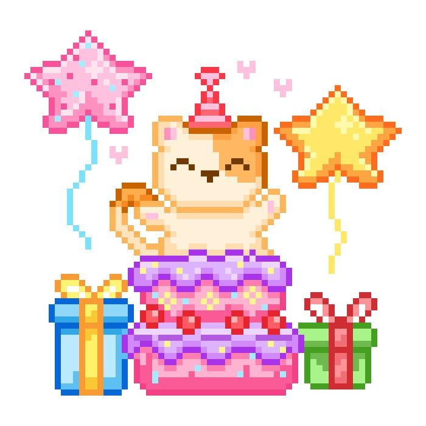

A SPECIAL DAY FOR YOU
BIRTHDAY Cahaya Auriel Hidayani!
Hari ini, semesta merayakan hadirmu dengan berjuta doa dan harapan indah yang menyertaimu.

A LITTLE CELEBRATION
For Someone Special

Ada hari yang terasa lebih istimewa karena seseorang seperti dirimu hadir di dunia.
Selamat datang di halaman kecil yang disiapkan dengan penuh kasih untukmu, Auriel.
LITTLE PIECES OF HAPPINESS
Our Little Princess
Beberapa kenangan mungkin sederhana, tetapi selalu punya tempat tersendiri di hati.


MAKE A WISH
Waktunya Membuat Harapan
Pejamkan matamu sejenak, pikirkan harapan terbaikmu, lalu tiup lilinnya.
OUR WISHES FOR U
Kasih dari Kakak untuk Dede Sayang
Selamat bertambah usia, Dede Sayang. Terima kasih karena telah hadir dalam kehidupan Kakak, mengajarkan banyak hal, dan tumbuh menjadi seorang Auriel yang membawa kehangatan serta kebahagiaan bagi orang-orang di sekitarnya. Semoga dunia selalu memperlakukan Ade dengan lembut, sebagaimana indahnya kehadiran Ade bagi dunia.
With all my love, Kakak.
open this video for youA LETTER FROM MBAK MILA
Untuk Ade Urel, Sayangku
Happy birthday, ade akuuu, sayang akuuu. 🤍
Selamat bertambah usia, sayangg. Semoga di umur yang baru ini, panjang umur dan sehat selalu menyertai Ade. Semoga rezeki Ade dilapangkan, langkah Ade dimudahkan, dan semoga hidup selalu menitipkan lebih banyak kebahagiaan daripada kesedihan untuk Ade. Semoga hal-hal baik datang kepada Ade, bahkan dari arah yang tidak pernah Ade sangka sebelumnya. ✨
Aku kadang masih suka heran, bagaimana seseorang yang awalnya hanya aku kenal dari sebuah layar, bisa perlahan menjadi seseorang yang begitu dekat di hati.
Aku nggak pernah menyangka akan punya ade seperti Ade urel ku ini. Dari kita berempat, Ade memang paling manja, tapi justru itu salah satu hal yang aku suka dari Ade. Aku suka Ade yang sekarang— yang lembut, baik, soft spoken, sedikit asbun, dan punya cara sendiri untuk membuat orang di sekitarnya merasa nyaman.
Jadi, kalau boleh meminta satu hal di hari ulang tahun Ade ini, jangan berubah terlalu jauh, ya, dedekuu. Tumbuhlah, menjadi lebih dewasa, lebih kuat, dan lebih hebat, tapi semoga sisi lembut Ade yang aku kenal hari ini tetap tinggal. 🤍
Aku juga punya satu doa kecil untuk Ade, dan kita.
Semoga suatu hari nanti, kita benar-benar dipertemukan.
Bukan lagi sekadar nama yang muncul di layar, bukan hanya suara dari sambungan telepon, atau tulisan yang kita kirim ketika ingin bercerita. Aku ingin melihat Ade secara langsung, bertemu Kakak dan Nata juga, lalu mungkin kita akan tertawa karena akhirnya orang-orang yang selama ini hanya kita kenal dari layar benar-benar duduk di hadapan kita.
Entah kapan hari itu datang, tapi aku ingin menyimpannya sebagai salah satu harapan kecil yang baik.
Karena mungkin, ketika kita benar-benar bertemu nanti, ada banyak hal yang selama ini nggak mampu aku ungkapkan lewat kata-kata yang akhirnya bisa tersampaikan hanya lewat satu pelukan. 🤍
Ade, jangan pernah bosan menjadi tempat aku bercerita, ya. Dan kalau suatu hari dunia terasa terlalu berat untuk Ade, jangan lupa kalau Ade juga punya tempat untuk bersandar.
Kalau aku boleh menjadi rumah kecil untuk cerita-cerita Ade, datanglah kapan pun Ade butuh. Nggak harus membawa cerita yang indah. Bawa saja apa adanya—sedihnya, lelahnya, kecewanya. Aku akan tetap mendengarkan. 🫂
Lucu juga kalau mengingat awal mula kita.
Kita dipertemukan oleh TikTok, gara-gara au William pacar kita mwehehe. Awalnya hanya mutualan, lalu pindah ke WhatsApp, mulai berbagi cerita, dan tanpa sadar hubungan yang tadinya hanya “teman” perlahan terasa seperti keluarga.
Padahal kita belum genap setahun saling mengenal.
Tapi mungkin memang begitu cara beberapa orang hadir dalam hidup kita. Bukan melalui waktu yang panjang, melainkan melalui rasa yang datang begitu dalam.
In another life, mungkin...
Aku ingin kita sudah saling mengenal jauh sebelum kehidupan ini mempertemukan kita. Mungkin kita tumbuh bersama, berbagi lebih banyak hari, dan punya lebih banyak kenangan yang bisa kita sebut sebagai “dulu”.
Tapi kalau ternyata kehidupan ini adalah satu-satunya kesempatan kita untuk saling menemukan, aku tetap bersyukur.
Karena di antara begitu banyak manusia yang berjalan di bumi ini, semesta pernah membawa langkah kita ke tempat yang sama.
Aku ingin suatu hari nanti kita bisa mengenal satu sama lain dalam kehidupan yang nyata. Supaya ketika salah satu dari kita sedang sedih, kesedihannya nggak hanya menjadi cerita di layar, tapi bisa kita peluk sampai terasa sedikit lebih ringan. Supaya ketika salah satu dari kita bahagia, kebahagiaannya bisa benar-benar dirayakan bersama.
Dan kalau suatu hari nanti jarak kembali menjadi alasan kita jarang bertemu, semoga kita tetap tahu bahwa pernah ada satu masa ketika kita saling menemukan, saling menjaga, dan menjadi bagian kecil dari hidup satu sama lain. 🤍
Mau bagaimanapun keadaan nanti, Ade Urel tetap menjadi adekku yang paling manis.
Dan tentu saja...
Istri bungsunya William.
Karena istri pertama tetap Est, lalu Kakak, baru aku, ke empat baru Nata, lalu Ade dehhh. Hahahaha.
Untuk prank empat hari yang kemarin, maafin kita ya sayangkuuu 😭🤍. Kita nggak ada masalah apa-apa kokk, suer deh. Jangan disimpan di hati, yaa sayang.
Sekali lagi, selamat ulang tahun, Ade aku.
Semoga usia baru ini menjadi halaman yang lebih lembut untuk Ade. Semoga segala doa yang diam-diam Ade simpan menemukan jalannya untuk menjadi nyata. Dan semoga, di antara banyak hal yang akan Ade temui nanti, Ade selalu menemukan alasan untuk tetap percaya bahwa hidup punya banyak hal indah yang sedang menunggu.
Terima kasih sudah hadir, meski awalnya hanya sebagai seseorang yang aku temui di layar.
Dan terima kasih karena dalam waktu yang belum begitu panjang, Ade sudah berhasil menjadi seseorang yang rasanya begitu dekat.
Tetap jadi Ade Urel yang aku kenal, ya. Yang lembut, yang manis, yang manja, dan sedikit asbun itu. 🤍
Dengan sayang,
Mba Mila-nya Ade,
sekaligus istri ketiga William. 🤍
A LETTER FROM NATA
Untuk Ade Urel, Kesayangan Nata
Happy birthday, adeee sayanggggg. 🤍✨
Selamat bertambah usia, ya sayang. Semoga di usia yang baru ini, Ade selalu diberi kesehatan, semoga panjang umur, semoga diberi Tuhan rezeki yang lapang, dan semoga langkah yang Ade jalani senantiasa dimudahkan Tuhan. Semoga hidup Ade lebih sering menghadirkan kebahagiaan daripada kesedihan, dan semoga segala doa yang Ade panjatkan dalam diam perlahan menemukan jalan untuk menjadi nyata.
Di hari ini, Nata hanya ingin Ade tahu bahwa Ade selalu pantas mendapatkan banyak hal baik. Semoga hati Ade selalu dikelilingi oleh ketulusan, semoga setiap lelahnya Ade menemukan tempat untuk beristirahat, dan semoga Ade tidak pernah kehabisan alasan untuk tersenyum.
Tumbuh dengan bahagia, ya sayangku, dedekuu, cintaku. Tidak perlu terburu-buru untuk menjadi dewasa, tidak perlu selalu terlihat kuat di depan semua orang, ya sayang, dan tidak perlu juga memaksakan diri untuk menjadi baik-baik saja di setiap waktu. Kalau dunia terasa melelahkan, beristirahatlah sejenak lalu bangkit lagi untuk melawan dunia yang jahat ini. Ade tidak harus memenangkan setiap hari untuk membuktikan bahwa Ade sudah berusaha.
Nata berharap, semakin bertambah usia, semakin banyak hal baik yang Ade temui. Semoga Ade tumbuh menjadi seseorang yang lebih kuat tanpa kehilangan kelembutan, semoga Ade lebih dewasa tanpa kehilangan keceriaan, dan lebih berani mencintai diri sendiri tanpa merasa bersalah. 🤍
Ada satu harapan kecil yang ingin Nata titipkan kepada dunia... semoga suatu hari nanti, kita benar-benar dipertemukan, ya sayang.
Nata ingin hari itu benar-benar datang, ketika Kakak, Mbak, Ade, dan Nata yang selama ini cuma bisa saling menyapa lewat chat aja mwehehe, nanti pada akhirnya kita dipertemukan secara nyata. Ketika cerita-cerita yang biasa kita bagi melalui pesan berubah menjadi percakapan yang panjang sampai satu hari terasa kurang untuk pertemuan kita nanti. Nanti, umm, kita ketawa bareng, ya... kita tertawa tanpa ada batas jarak lagi, dan kita pelukan, ya... Nata selalu menanti semua hal yang hanya mampu kita sampaikan lewat kata-kata.
Semoga suatu hari nanti, kita bisa duduk bersama, saling cerita, lalu tersenyum karena akhirnya doa kecil yang selama ini kita simpan menemukan jalannya untuk menjadi nyata. Mungkin kita akan tertawa mengingat semua chat kita selama ini mwehehehe. Ya, bayangkan saja kita aja pembahasannya kayak gitu, dan nanti kita menikmati waktu bersama tanpa perlu memikirkan kapan percakapan harus berakhir.
Entah kapan hari itu akan tiba, tetapi semoga semesta berkenan mempertemukan kita pada waktu yang baik. Sebab, ada beberapa pertemuan yang rasanya layak untuk ditunggu, sekalipun kita belum tahu kapan akan sampai pada waktunya.... 😊🤍
Oh iya, Dek... kalau suatu hari nanti dunia terasa terlalu berat, jangan lupa bahwa Ade juga boleh bersandar. Tidak harus selalu membawa cerita yang menyenangkan, tidak harus menyembunyikan kesedihan, dan tidak harus berpura-pura kuat ketika hati sedang lelah. Intinya nanti nggak ada rahasia di antara kita, oke???? Sepakat yaa.
Kalau Nata bisa menjadi tempat untuk Ade bercerita, datanglah kapan pun Ade butuh. Bawalah cerita bahagia, keluh kesah, atau bahkan hal-hal kecil yang mungkin bagi orang lain tidak berarti apa-apa. Nata akan senantiasa senang mendengar semuanyahhhhh.
Ummm, Nata tahu... Nata mungkin tidak selalu punya jawaban untuk setiap masalah yang Ade ceritakan nantinya, tetapi semoga Nata saja bisa menjadi salah satu orang yang membuat Ade merasa tidak sendirian lagiii.... 🫂🤍✨
Kadang Nata membayangkan ini... Ummm, in another life, mungkin kita sudah saling mengenal jauh sebelum hari ini. Mungkin juga ada lebih banyak waktu untuk berbagi cerita, lebih banyak kesempatan untuk menciptakan kenangan, dan lebih banyak hari untuk tumbuh bersama.
Jika kehidupan ini adalah satu-satunya kesempatan bagi kita untuk saling menemukan, Nata tetap bersyukur. Sebab, di antara sekian banyak jalan yang bisa kita tempuh, ternyata ada satu jalan yang membawa kita untuk saling mengenal satu sama lain.
Dan jika suatu hari nanti jarak tidak lagi menjadi penghalang, semoga kita bisa merayakan pertemuan itu dengan sederhana... Pokoknya semua harus dirayakan... Nanti kita duduk bersama, tertawa tentang hal-hal kecil, lalu menyadari bahwa ternyata ada kebahagiaan yang selama ini hanya bisa kita bayangkan.
Sampai hari itu tiba, semoga kita tetap saling menjaga, saling mendoakan, dan tetap punya ruang untuk menjadi diri sendiri tanpa takut dihakimi.
Ohhh iya, satu lagi... meskipun Ade bertambah usia nihh yaaa, Ade akan tetap menjadi adek Nata yang paling cantik, imut, dan manis. Tidak ada yang berubah meskipun usia bertambah, oke sayang? Ade tetap menjadi kesayangan kita semua, tetap boleh manja-manja sama Kakak, Mbak, dan Nata. Jadi, jangan pernah merasa harus selalu dewasa, ya, adeeee kuw. 🥰
Dan... ituu... eummm anuu, untuk prank beberapa hari kemarin, eumm... maafin kita, ya, sayangku. Kita benar-benar tidak ada masalah apa-apa, kok. Jangan disimpan di hati, ya, dedekuu. Semoga sekarang Ade sudah bisa tertawa mengingatnya, bukan malah kepikiran lagi. 🤍🫂
NAHHH, satu lagiiiiii, kalau Ade mau tahu, nih ya, sebenarnya itu semua ide Kakak dan Mbak taukkkk, sedangkan Nata cuma ikut acting saja, mwehehehe. Nata kemarin kelihatan jahat banget, ya, Dek? Ihhhh, rasanya Nata jadi ngerasa bersalah deh... tapiiii, tapii, tapii... sebenarnya Nata tuhh sayang banget sama Adeee. 🥹🤍
Ummm, oke, untuk sekarang ayo kita huggie wuggie duluuu! Sini, sini, Ade harus dapat peluk jauuuuh yang banyaaak dari Kakak, Mbak, dan Nata. 🫂💗
Nata mau peluk Ade erat-erat sambil bilang kalau semuanya baik-baik saja, ya, sayang. Kita nggak ke mana-mana, kok. Jangan takut kehilangan kita, ya, dedek manisnya Nata. Jujur, Nata benar-benar nggak tahu bagaimana reaksi Ade waktu baca semua ini nanti... Apa Ade bakal ketawa, nangis, teriak, atau malah pengen kita klarif satu-satu? Kalau iya, ya sudah, Nata pasrah aja lahhh... Tapi Nata mohon jangan marah yahw, sayang, kalo Ade marah teh seremmm... Mematikannnn... Nata masih mau hidup untuk melihat Ade tumbuh makin besar dan makin bahagia. 🙂🙏🏻
Tapi di balik semua candaan itu, Nata sungguh-sungguh minta maaf karena sudah ikut ngeprank Ade kemarin. Nata tahu mungkin selama beberapa hari itu Ade sempat bingung, sedih, atau memikirkan banyak hal yang sebenarnya nggak perlu Ade pikirkan sendirian. Maaf, ya, sayangku, karena sudah membuat hati kecil Ade merasa nggak tenang.
Nata harap setelah membaca ini, Ade bisa sedikit lega. Jangan merasa bersalah atas apa pun, ya. Ade nggak melakukan kesalahan apa-apa. Semuanya memang sudah direncanakan Kakak dan Mbak, lalu Nata ngikut aja... ternyata Nata dijadiin pemeran antagonis sama Kakak dan Mbak uhuhuhu, tapi beneran, Dek... MAAF BANGETT YAKKK! 😭🤍
Sekarang sini, kita baikan, ya? Nggak boleh sedih lagi sendirian. Kalau masih mau ngambek, boleh, deh, tapi sambil dipeluk jauh. Kalau mau protes, silakan, nanti kita dengarkan... Setelah ini beneran usahakan grup rame yah... jangan beneran jauh-jauhan. 🥹
Pokoknya, Ade tetap menjadi adek kesayangan kita semua. Nggak berubah sedikit pun hanya karena prank beberapa hari kemarin. Ade tetap boleh manja sama Kakak, Mbak, dan Nata. Tetap boleh bercerita, tertawa, mengeluh, bahkan menjadi Ade yang paling kita sayang dengan segala tingkah manis di sisi diri Ade.
Sekali lagi, maafin kita, ya, sayangku. Nata sayang Ade banyaaaaak sekali, lebih banyak daripada kata-kata yang bisa Nata tuliskan di sini. Sekarang, peluk jauhnya diterima dulu, yaaa.
HUGGIE WUGGIEEE, ADEK KESAYANGAN NATA! 🫂🤍
Jangan lupa senyum lagi, dedekuu. Karena setelah semua drama yang kita buat, sekarang giliran kita yang harus membuat Ade bahagia lagi. MWEHEHEHE. 💗
Sekali lagi, selamat ulang tahun, Adeeeee.
Semoga usia yang baru menjadi halaman yang lebih indah untuk Ade. Semoga hal-hal yang pernah membuat Ade menangis perlahan digantikan oleh kebahagiaan yang lebih menetap. Semoga setiap kehilangan mengajarkan ketabahan, setiap kesulitan membawa pelajaran, dan setiap langkah membawa Ade semakin dekat dengan hal-hal yang selama ini diimpikan.
Terima kasih sudah menjadi bagian dari cerita Nata. Semoga di antara banyak hal yang akan berubah seiring berjalannya waktu, selalu ada kebaikan yang tinggal dan kasih sayang yang tidak mudah hilang.
Tetap jadi Ade Urel yang Nata kenal, ya, sayang. Ade yang manis, lembut, manja. Tumbuhlah dengan bahagia, sayangi diri Ade lebih banyak, dan jangan pernah merasa harus menjalani semuanya sendirian.
Semoga semesta selalu punya cara untuk memeluk Ade, bahkan pada hari-hari ketika tidak ada siapa pun yang tahu bahwa Ade sedang berusaha kuat.
Happy birthday, adekkuu. Semoga bahagia selalu menemukan jalan pulang kepada Ade, berkali-kali, dalam bentuk yang sederhana maupun yang tidak pernah Ade duga sebelumnya. Semoga langkah Ade selalu dipertemukan dengan orang-orang baik, hati Ade selalu diberi ketenangan, dan hari-hari mendatang menyimpan lebih banyak alasan untuk disyukuri.
Sampai nanti, ketika jarak akhirnya menyerah dan kita bisa saling memeluk tanpa perantara. Semoga saat itu tiba, kita masih menjadi kita yang saling mengenal, saling menyayangi, dan bersyukur karena pernah dipertemukan. 🤍
With all my love,
Nata-nya Ade,
sekaligus istri keempat William.
*kata Mbak 🤍
A LITTLE NOTE FOR YOU
Untuk Auriel, dengan Segala Sayang
Di antara banyak hal yang berubah seiring waktu, semoga kamu tidak pernah kehilangan hal-hal sederhana yang membuatmu bahagia.
Semoga hari-harimu dipenuhi cerita yang kelak ingin kamu kenang kembali, pertemuan yang menghangatkan hati, dan kesempatan untuk menjadi versi dirimu yang semakin baik.
Terima kasih sudah hadir di dunia dan menjadi bagian dari cerita orang-orang yang menyayangimu. Hari ini adalah tentang dirimu, tentang perjalananmu, dan tentang semua kemungkinan indah yang masih menunggumu.
You are loved more than you know.
ONE LAST MESSAGE
Pesan Terakhir untukmu
Sebelum perjalanan kecil ini berakhir, ada satu hal yang ingin Kakak sampaikan.
Semoga setiap doa baik yang dititipkan hari ini tumbuh menjadi kebahagiaan dalam hidupmu. Teruslah bersinar dengan caramu sendiri, Auriel.
You will always be loved.
WITH LOVE, ALWAYS
Happy Birthday, Auriel!

Semoga kebahagiaan selalu menemukan jalan pulang kepadamu, hari ini dan di hari-hari yang akan datang.
Dari orang-orang yang menyayangimu.